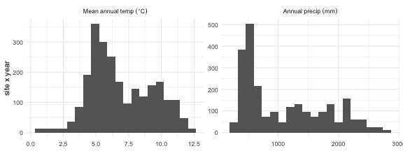
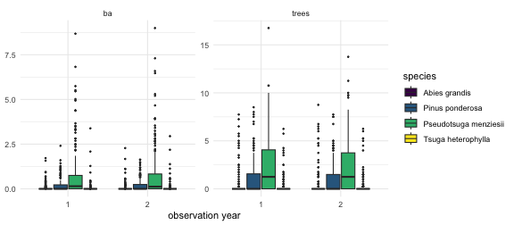
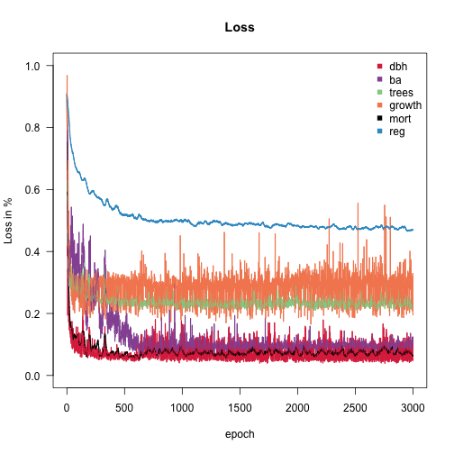
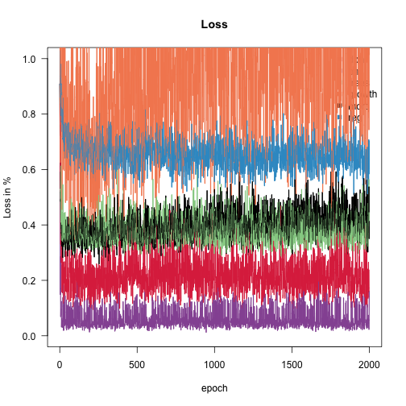
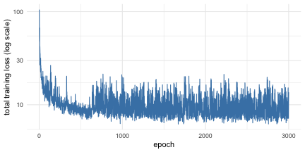
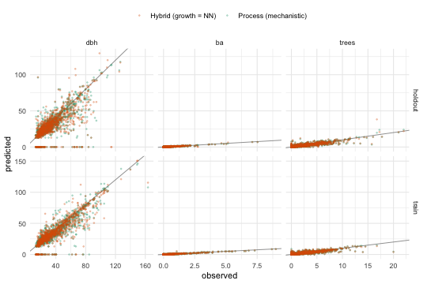
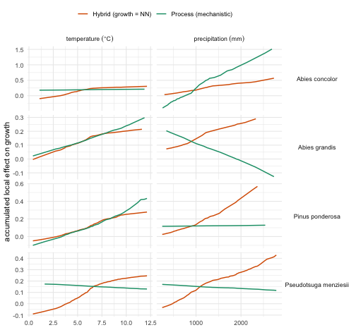
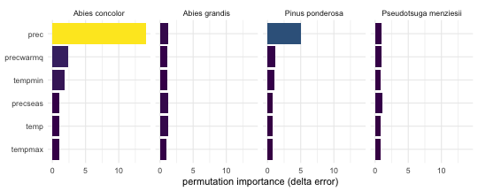
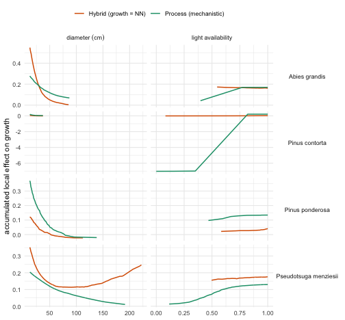

Fitting FINN to forest inventory data (Oregon, US FIA)
Source:vignettes/D-Fit_to_FIA.Rmd
D-Fit_to_FIA.RmdDynamic forest models are usually hand-calibrated. Here we calibrate FINN directly from data: a subset of the US Forest Inventory & Analysis (FIA) program for Oregon, prepared exactly as in the Preparing your data for FINN vignette.
We fit on 200 sites and evaluate on 200 held-out sites, so every number below is reported both in-sample and out-of-sample.
Everything on this page really runs — both models are trained,
simulated and interpreted for real. Because that needs a torch backend
and several minutes, the vignette is precompiled:
vignettes/build.R knits D-Fit_to_FIA.Rmd.orig
once on a developer machine and commits the resulting static
.Rmd. So the code you see is exactly the code that produced
the output beside it, and the package builds anywhere without torch.
library(FINN)
library(torch)
library(data.table)
library(ggplot2)
# Training length. Lower this (e.g. 500L) for a quick knit while developing.
EPOCHS <- 2000LThe data
The bundled tables are built by
dev/make_extdata.R, which draws 400 sites
from the full Oregon FIA set in data-raw/ and splits them
into two disjoint samples. The climate
(fia_env_dt.csv) traces upstream to the FINN-fia analysis
repo (scripts/03_attach_environment.R →
07_prepare_finn_inputs.R); see
data-raw/README.md for the full chain.
The data come in two disjoint samples: 200 sites to fit on, and 200 completely separate sites held out for evaluation. Because FINN’s parameters are per-species × environment rather than per-site, a fitted model transfers to sites it has never seen — so the holdout is a genuine out-of-sample test.
ext <- function(f) system.file("extdata", f, package = "FINN")
# --- training sites --------------------------------------------------------
obs_dt <- fread(ext("fia_obs_dt.csv")) # observations, wide (one column per variable)
env_dt <- fread(ext("fia_env_dt.csv")) # RAW, untransformed climate
init_trees <- fread(ext("fia_init_trees.csv"))
species_dt <- fread(ext("fia_species_dt.csv"))
# --- holdout sites: never seen during fitting ------------------------------
obs_test <- fread(ext("fia_obs_test.csv"))
env_test <- fread(ext("fia_env_test.csv"))
init_test <- fread(ext("fia_init_test.csv"))
# long form of the observations, so later we can match FINN's long predictions
# (sim$long$site) with a single merge()
resp <- c("dbh", "ba", "trees", "growth", "mort", "reg")
to_long <- function(d) melt(d, id.vars = c("siteID", "year", "species", "species_name"),
measure.vars = resp, variable.name = "variable", value.name = "obs")
obs_long <- to_long(obs_dt)
test_long <- to_long(obs_test)
cat(sprintf("train: %d sites | holdout: %d sites | %d species | years %s\n",
uniqueN(obs_dt$siteID), uniqueN(obs_test$siteID), uniqueN(obs_dt$species),
paste(sort(unique(obs_dt$year)), collapse = " & ")))
#> train: 200 sites | holdout: 200 sites | 11 species | years 1 & 2
species_dt
#> species species_name
#> <int> <char>
#> 1: 1 Pseudotsuga menziesii
#> 2: 2 Pinus ponderosa
#> 3: 3 Pinus contorta
#> 4: 4 Abies concolor
#> 5: 5 Abies grandis
#> 6: 6 Tsuga heterophylla
#> 7: 7 Tsuga mertensiana
#> 8: 8 Lithocarpus densiflorus
#> 9: 9 Alnus rubra
#> 10: 10 Abies amabilis
#> 11: 11 otherThe environment is supplied in natural units: with
env_autoscale = TRUE (the default) FINN z-standardizes the
predictors internally and reuses the same constants at prediction time,
so raw values are all we ever pass.
ggplot(melt(env_dt[, c("temp", "prec")], measure.vars = c("temp", "prec")),
aes(value)) +
geom_histogram(bins = 20, fill = "grey40") +
facet_wrap(~variable, scales = "free", labeller = as_labeller(
c(temp = "Mean~annual~temp~(degree*C)", prec = "Annual~precip~(mm)"), label_parsed)) +
labs(x = NULL, y = "site x year") + theme_minimal()
A few observed series — basal area and tree numbers by year for the most abundant species:
top_sp <- obs_dt[species_name != "other", .(tot = sum(ba, na.rm = TRUE)), by = species][order(-tot)][1:4, species]
ggplot(obs_long[species %in% top_sp & variable %in% c("ba", "trees")],
aes(factor(year), obs, fill = factor(species_name))) +
geom_boxplot(outlier.size = 0.4) +
facet_wrap(~variable, scales = "free_y") +
scale_fill_viridis_d(name = "species") +
labs(x = "observation year", y = NULL) + theme_minimal()
Initial cohorts
Each simulation starts from the observed first inventory. We build the starting state for both samples — the holdout gets its own cohorts, from its own sites.
Nsp <- max(obs_dt$species)
init_cohorts <- makeInitCohorts(init_trees, Nspecies = Nsp)
init_cohorts_test <- makeInitCohorts(init_test, Nspecies = Nsp)Fit a Process-FINN
In the fully mechanistic configuration every process keeps its
predefined form, while its species and environmental parameters are
learned (optimize* = TRUE) and the ~. formula
lets every environmental predictor enter the growth, regeneration and
mortality responses. The model is calibrated end-to-end by gradient
descent through the entire simulation.
FINN.seed(42)
m <- finn(
N_species = uniqueN(obs_dt$species),
recruits_dbh = 12.9,
competition_process = createProcess(~0, FINN::competition, optimizeSpecies = TRUE),
growth_process = createProcess(~., FINN::growth, optimizeSpecies = TRUE, optimizeEnv = TRUE),
regeneration_process = createProcess(~., FINN::regeneration, optimizeSpecies = TRUE, optimizeEnv = TRUE),
mortality_process = createProcess(~., FINN::mortality, optimizeSpecies = TRUE, optimizeEnv = TRUE)
)
fit(m,
env = env_dt, # raw climate
data = obs_dt,
init_cohort = init_cohorts,
device = "cpu",
epochs = EPOCHS,
batchsize = 40L,
patches = 4,
patch_size = 0.06,
weights = c(0.1, 10, 1.0, 10.0, 1, 1),
lr = 0.01,
env_autoscale = TRUE # default
)
Replace growth with a neural network (Hybrid-FINN)
FINN’s defining feature is that any single demographic
process can be swapped from a mechanistic function to a neural
network, while the others stay mechanistic — a hybrid
model. The mechanistic processes keep the system ecologically
constrained; the network absorbs structure the fixed functional form
cannot express. Here we replace growth with a small
neural network via createHybrid(), leaving competition,
regeneration and mortality mechanistic, and refit on the same data with
the identical fit() call.
FINN.seed(42)
m_hybrid <- finn(
N_species = uniqueN(obs_dt$species),
recruits_dbh = 12.9,
competition_process = createProcess(~0, FINN::competition, optimizeSpecies = TRUE),
growth_process = createHybrid(~., hidden = c(20L, 20L), transformer = FALSE), # NN replaces growth
regeneration_process = createProcess(~., FINN::regeneration, optimizeSpecies = TRUE, optimizeEnv = TRUE),
mortality_process = createProcess(~., FINN::mortality, optimizeSpecies = TRUE, optimizeEnv = TRUE)
)
fit(m_hybrid,
env = env_dt, data = obs_dt, init_cohort = init_cohorts, device = "cpu",
epochs = EPOCHS, batchsize = 40L, patches = 4, patch_size = 0.06,
weights = c(0.1, 10, 1.0, 10.0, 1, 1), lr = 0.01, env_autoscale = TRUE
)
With both variants fitted, the rest of the vignette inspects and
compares them: training convergence, a summary() of the
learned structure, predicted-vs-observed fit, the learned niches, and
the accumulated local effects that reveal what the network learned.
Training convergence
Both variants are trained the same way; the training loss of the process model is shown here.
loss <- data.table(epoch = seq_along(m$history), loss = sapply(m$history, sum))
ggplot(loss, aes(epoch, loss)) +
geom_line(colour = "steelblue") +
scale_y_log10() +
labs(x = "epoch", y = "total training loss (log scale)") + theme_minimal()
What the model learned — summary()
summary() gives a compact overview of the learned
structure: for each process and species it reports how important
each environmental predictor is (ALE-variance importance,
rate-normalised) and its average conditional effect. It reuses the
cached conditional effects, so once ALE() (below) or a
previous summary() has run it needs no further
simulation.
summary(m)
FINN model summary
==================
### GROWTH
Analytical ALE importance (rate-normalised) (species in columns):
variable sp1 sp2 sp3 sp4 sp5 sp6 sp7 sp8 sp9
tempmax 0.0229 1.03e+01 0.00729 0.81609 10.267 0.14773 0.02672 0.0051 0.0631
precwarmq 1.3149 4.68e-04 0.62125 0.33105 18.912 0.05040 0.00391 1.8151 0.0706
prec 3.0803 5.44e-01 3.03680 0.11145 1.255 2.18050 0.38360 1.1333 0.7879
temp 0.3247 1.88e-03 0.14186 1.85987 3.463 0.00192 1.71827 0.2585 2.7509
precseas 0.4551 1.37e-02 0.31977 0.00736 0.442 0.36148 2.25481 0.0791 2.8965
tempmin 0.4592 2.13e-06 1.04825 0.72424 0.227 0.34340 3.18356 0.2439 0.1563
sp10 sp11
3.6323 0.0331
0.3655 0.3447
0.5747 0.0508
0.1965 0.0184
0.7833 0.0454
0.0287 0.1869
Average conditional effects (mean; species in columns):
variable sp1 sp2 sp3 sp4 sp5 sp6 sp7
precseas -0.04752 -0.014535 -0.02760 0.00313 0.0666 0.07646 0.30757
tempmax -0.00992 -0.126989 0.00354 0.05965 0.2232 0.02905 0.01275
prec 0.13544 0.059236 0.10135 -0.03964 0.0739 0.10153 -0.04582
precwarmq -0.07931 -0.001282 -0.03749 -0.07012 0.1781 -0.02825 -0.00951
temp 0.04421 0.003300 -0.01740 -0.11353 -0.1581 0.00588 -0.05545
tempmin -0.05756 0.000146 -0.04760 0.08053 -0.0298 0.05289 0.07806
sp8 sp9 sp10 sp11
0.02125 0.0839 0.4113 0.0223
-0.00149 -0.0162 0.4754 0.0227
0.02512 0.0513 0.2248 -0.0298
-0.10819 -0.0231 0.1980 0.0671
0.02566 -0.1253 -0.1875 0.0166
0.02547 -0.0333 0.0598 -0.0571
### MORTALITY
Analytical ALE importance (rate-normalised) (species in columns):
variable sp1 sp2 sp3 sp4 sp5 sp6 sp7 sp8
tempmin 0.01914 0.00730 3.2123 0.15891 2.14e-02 0.003907 0.00692 0.93460
precseas 0.00854 0.22824 0.5268 1.03761 6.91e-01 0.026385 0.76699 0.09532
precwarmq 1.34311 0.04601 1.1191 0.01920 2.49e-01 0.000241 0.15960 0.10694
prec 0.14842 0.28415 0.0552 0.00284 4.67e-01 0.657343 0.09104 0.02990
tempmax 0.31544 0.20049 0.0588 0.61677 8.74e-02 0.001740 0.36878 0.00773
temp 0.05133 0.00445 0.2427 0.51636 6.29e-06 0.020808 0.13030 0.66020
sp9 sp10 sp11
0.008299 0.2988 7.98e-09
0.101850 0.0129 1.74e-02
0.000581 0.0259 3.03e-02
0.087108 0.2140 2.63e-02
0.024677 0.0278 1.45e-03
0.030661 0.0169 3.62e-02
Average conditional effects (mean; species in columns):
variable sp1 sp2 sp3 sp4 sp5 sp6 sp7
precseas -0.0151 -0.0587 -0.00496 -0.031667 0.047513 -0.016101 -0.1107
prec 0.0375 0.1057 -0.00197 -0.000795 0.018691 -0.010655 -0.0733
tempmax 0.0495 -0.0494 -0.00175 -0.020016 -0.016479 -0.001095 0.1133
temp 0.0203 0.0111 0.00374 0.015013 -0.000197 0.008581 0.1240
precwarmq 0.0662 -0.0344 -0.00787 0.002446 -0.019026 -0.000637 -0.0812
tempmin -0.0154 -0.0109 0.01046 0.008877 0.005761 0.002774 0.0279
sp8 sp9 sp10 sp11
-0.01102 0.04108 -0.0627 -1.30e-02
-0.00821 0.03621 -0.0439 -2.03e-02
0.00534 -0.01916 0.0209 -4.62e-03
-0.02151 -0.03432 0.0197 2.37e-02
0.00943 -0.00326 -0.0301 2.00e-02
-0.01979 -0.01828 -0.0463 -1.15e-05
### REGENERATION
Analytical ALE importance (rate-normalised) (species in columns):
variable sp1 sp2 sp3 sp4 sp5 sp6 sp7 sp8
tempmin 0.81353 0.00441 0.000488 0.46634 0.00284 0.0351 0.0408 0.00850
temp 0.00747 0.00278 0.001104 0.27415 0.01092 0.1334 0.1383 0.02124
precwarmq 0.03349 0.01543 0.007795 0.18283 1.07330 0.0822 0.0575 2.75022
tempmax 0.00791 0.26974 0.264458 0.29047 0.02081 0.8102 0.2283 0.32659
precseas 0.06217 0.34980 2.014065 0.00167 0.20579 0.0255 0.1751 0.00157
prec 0.28120 0.43459 2.245216 0.05017 0.03274 0.0508 0.0528 0.19984
sp9 sp10 sp11
0.0991 0.06393 6.954833
0.7332 0.24821 6.145850
0.0510 0.00163 0.000381
0.0605 0.40306 0.990610
0.0357 0.05541 0.714162
0.0138 0.07209 0.000856
Average conditional effects (mean; species in columns):
variable sp1 sp2 sp3 sp4 sp5 sp6 sp7 sp8
tempmin 1.849 -0.0339 -0.0232 -0.3040 -0.0146 0.0220 -0.294 0.0278
temp 0.189 -0.0271 0.0308 0.2377 -0.0204 0.0322 -0.531 0.0441
precseas 0.679 0.1955 0.6927 0.0136 -0.1137 -0.0197 1.018 0.0139
prec -1.029 -0.3801 -1.7538 -0.1636 -0.0586 -0.0224 0.138 0.0876
tempmax 0.155 0.1775 -0.3834 0.1290 -0.0245 -0.0601 -0.380 -0.0807
precwarmq 0.297 -0.0893 -0.1171 -0.3404 0.1589 -0.0142 -0.403 -0.2029
sp9 sp10 sp11
0.1138 0.1921 3.5590
0.2969 -0.7807 -3.8187
-0.1203 0.6947 1.4836
-0.0294 0.2006 -0.0387
-0.0454 -0.3573 1.3281
-0.0491 0.0257 -0.0261The niche and ALE sections below unpack this overview into per-driver response curves.
Assess the fit — in-sample and on held-out sites
The fit was calibrated on the 200 training sites, so scoring it there only tells us how well it reproduces them. The honest question is whether it transfers, so we simulate each model twice — once on the training sites, once on the 200 held-out sites — and score both with Spearman correlation (rank agreement) and RMSE (in each response’s own units), matched on site × year × species.
# One prediction pass per model x sample. The holdout is driven only by its own
# environment and starting cohorts; nothing about it entered the fit.
pred_of <- function(model, label, env, init, obs_l, split) {
model$eval() # deterministic: dropout off
sim <- predict(model, env = env, init_cohort = init,
patches = 4, patch_size = 0.06, device = "cpu")
merge(obs_l, sim$long$site, by = c("siteID", "year", "species", "variable"
))[, `:=`(model = label, split = split)][]
}
FINN.seed(1)
obs_pred <- rbind(
pred_of(m, "Process (mechanistic)", env_dt, init_cohorts, obs_long, "train"),
pred_of(m, "Process (mechanistic)", env_test, init_cohorts_test, test_long, "holdout"),
pred_of(m_hybrid, "Hybrid (growth = NN)", env_dt, init_cohorts, obs_long, "train"),
pred_of(m_hybrid, "Hybrid (growth = NN)", env_test, init_cohorts_test, test_long, "holdout"))
metrics <- obs_pred[is.finite(obs) & is.finite(value),
.(spearman = round(cor(obs, value, method = "spearman"), 2),
rmse = round(sqrt(mean((obs - value)^2)), 2),
n = .N), by = .(model, split, variable)]
comparison <- dcast(metrics, variable + model ~ split, value.var = c("spearman", "rmse"))
setcolorder(comparison, c("variable", "model", "spearman_train", "spearman_holdout",
"rmse_train", "rmse_holdout"))
comparison[order(variable, model)]
#> Key: <variable, model>
#> variable model spearman_train spearman_holdout rmse_train
#> <fctr> <char> <num> <num> <num>
#> 1: dbh Hybrid (growth = NN) 0.86 0.72 11.31
#> 2: dbh Process (mechanistic) 0.85 0.75 11.63
#> 3: ba Hybrid (growth = NN) 0.84 0.81 0.12
#> 4: ba Process (mechanistic) 0.83 0.81 0.12
#> 5: trees Hybrid (growth = NN) 0.82 0.80 0.71
#> 6: trees Process (mechanistic) 0.82 0.80 0.71
#> 7: growth Hybrid (growth = NN) 0.30 0.24 0.13
#> 8: growth Process (mechanistic) 0.34 0.26 0.13
#> 9: mort Hybrid (growth = NN) 0.12 0.04 0.18
#> 10: mort Process (mechanistic) 0.08 0.06 0.18
#> 11: reg Hybrid (growth = NN) 0.21 0.19 6.22
#> 12: reg Process (mechanistic) 0.19 0.18 6.23
#> rmse_holdout
#> <num>
#> 1: 15.38
#> 2: 13.82
#> 3: 0.10
#> 4: 0.09
#> 5: 0.79
#> 6: 0.73
#> 7: 0.16
#> 8: 0.14
#> 9: 0.20
#> 10: 0.19
#> 11: 6.47
#> 12: 6.48The structural variables — basal area, tree numbers and diameter — are reconstructed well, and hold up on sites the model never saw: that gap between the train and holdout columns is the part that matters, because it is the only evidence that the fitted processes generalise rather than memorise. The noisier per-tree rates (growth, mortality, regeneration) are harder to constrain from two inventories and should be read with that in mind (see the caveat below). The hybrid tracks the mechanistic model on the structural variables — with no growth equation specified — which is what makes hybrids useful when a process’s form is uncertain; the surrounding mechanistic processes still anchor the model ecologically.
ggplot(obs_pred[variable %in% c("ba", "trees", "dbh") & is.finite(obs)],
aes(obs, value, colour = model)) +
geom_abline(slope = 1, intercept = 0, colour = "grey40", linewidth = 0.3) +
geom_point(alpha = 0.25, size = 0.5) +
facet_grid(split ~ variable, scales = "free") +
scale_colour_manual(values = model_cols) +
labs(x = "observed", y = "predicted", colour = NULL) +
theme_minimal() + theme(legend.position = "top")
A caveat on the rate variables.
growth,mortandregare per-tree rates and are only weakly constrained by two inventories, so their Spearman is a noisy estimate — refitting with a different random seed moves it by a few hundredths. Differences of that size between the models should not be over-read; the structural variables, estimated from far more information, are what carry the comparison.mortis the extreme case and gets a vignette of its own — Mortality: a binomial response and a neural-network process — because rank correlation is the wrong tool for a response that is mostly zeros.
Interpreting the growth process with ALE
ALE() returns the accumulated local
effect of every driver on each process — the effect measure of
choice when predictors are correlated, because it accumulates
local changes within the observed data instead of extrapolating
to unrealistic combinations. Running it on both fitted
models lets us read what growth responds to and compare the
mechanistic process with the neural-network hybrid, across growth’s
structural inputs (tree size, light) and its
environmental niche (climate). It returns one table per
process (growth, mortality,
regeneration); we use the growth table of each model.
FINN.seed(1)
ale_proc <- ALE(m, env_dt, init_cohorts, plot = FALSE) # mechanistic growth
ale_hyb <- ALE(m_hybrid, env_dt, init_cohorts, plot = FALSE) # growth = NN
# one tidy table with both variants. Environmental drivers come back on the
# model's scaled axis, so back-transform temp/prec to natural units (deg C, mm);
# the structural drivers (dbh, light) are already on their natural axes.
to_natural <- function(a, model) {
sc <- as.data.table(model$env_scaling)[, .(var = variable, center, scale)]
merge(data.table(a), sc, by = "var", all.x = TRUE)[!is.na(center), x := x * scale + center]
}
growth <- rbind(
to_natural(ale_proc$growth, m)[, model := "Process (mechanistic)"],
to_natural(ale_hyb$growth, m_hybrid)[, model := "Hybrid (growth = NN)"])
growth <- merge(growth, species_dt, by = "species")One helper plots the growth ALE of both variants for any set of drivers — one panel per species × driver, with independent axes so responses of very different magnitude stay legible side by side:
plot_growth_ale <- function(vars, labs) {
d <- growth[var %in% vars & species %in% c(1, 2, 4, 5)] # the four focal species
d[, var := factor(var, levels = names(labs))]
ggplot(d, aes(x, ale, colour = model)) +
geom_line(linewidth = 0.7) +
facet_grid(species_name ~ var, scales = "free",
labeller = labeller(var = as_labeller(labs, label_parsed),
species_name = label_value)) +
scale_colour_manual(values = model_cols) +
labs(x = NULL, y = "accumulated local effect on growth", colour = NULL) +
theme_minimal() + theme(legend.position = "top", strip.text.y = element_text(angle = 0))
}Environmental niches
Because the environmental responses are learned, each curve is an inferred niche — how a species’ growth scales along a climate gradient. Ecologically familiar contrasts emerge without being prescribed: Pinus ponderosa grows best on the driest sites, while wetter-climate species ramp up with precipitation. The hybrid’s learned climate response broadly tracks the mechanistic one.

Which drivers matter — feature_importance()
The niches show the shape of each response;
feature_importance() gives its magnitude. It
permutes each environmental predictor and re-simulates, measuring the
resulting increase in prediction error — a re-simulation counterpart to
the analytical importance in summary(). Below we read off
the importances for the growth process of the four focal species:
FINN.seed(1)
fi <- feature_importance(m, env_dt, init_cohorts, nperm = 20L, seed = 1L,
patches = 4, patch_size = 0.06, device = "cpu")
fimp_growth <- merge(data.table(fi$growth)[species %in% c(1, 2, 4, 5)],
species_dt, by = "species")
ggplot(fimp_growth, aes(reorder(variable, importance), importance, fill = importance)) +
geom_col() +
coord_flip() +
facet_wrap(~species_name, nrow = 1) +
scale_fill_viridis_c(guide = "none") +
labs(x = NULL, y = "permutation importance (delta error)") + theme_minimal()
Each species leans on a different climate driver — the importances are learned per species, not shared.
Response to size and light — did the network recover the mechanistic form?
The point of a hybrid is to ask which functional form the neural network learned and how it compares to the mechanistic function it replaced. For the pines the network recovered the mechanistic decline of growth with size almost exactly; for Abies grandis and Pseudotsuga it settled on a different, data-driven shape — the freedom that makes hybrids useful when the mechanistic form is uncertain.

Each curve spans only the range its own model actually simulates (ALE never extrapolates), so where the process and hybrid cover different ranges — as for Abies grandis light — the two models simply place that species in different conditions; the mismatch is information, not an artefact.
sessionInfo()
#> R version 4.5.0 (2025-04-11)
#> Platform: aarch64-apple-darwin20
#> Running under: macOS 26.5.1
#>
#> Matrix products: default
#> BLAS: /Library/Frameworks/R.framework/Versions/4.5-arm64/Resources/lib/libRblas.0.dylib
#> LAPACK: /Library/Frameworks/R.framework/Versions/4.5-arm64/Resources/lib/libRlapack.dylib; LAPACK version 3.12.1
#>
#> locale:
#> [1] C
#>
#> time zone: Europe/Berlin
#> tzcode source: internal
#>
#> attached base packages:
#> [1] stats graphics grDevices utils datasets methods base
#>
#> other attached packages:
#> [1] torch_0.15.1 ggplot2_3.5.2 data.table_1.17.8 FINN_0.1.0
#>
#> loaded via a namespace (and not attached):
#> [1] vctrs_0.6.5 cli_3.6.6 knitr_1.50 rlang_1.2.0
#> [5] xfun_0.57 processx_3.8.6 generics_0.1.4 coro_1.1.0
#> [9] labeling_0.4.3 glue_1.8.0 bit_4.6.0 ps_1.9.1
#> [13] scales_1.4.0 grid_4.5.0 abind_1.4-8 evaluate_1.0.5
#> [17] tibble_3.3.0 lifecycle_1.0.5 compiler_4.5.0 dplyr_1.1.4
#> [21] RColorBrewer_1.1-3 Rcpp_1.1.0 pkgconfig_2.0.3 farver_2.1.2
#> [25] viridisLite_0.4.2 R6_2.6.1 tidyselect_1.2.1 pillar_1.11.0
#> [29] callr_3.7.6 magrittr_2.0.3 withr_3.0.2 tools_4.5.0
#> [33] bit64_4.6.0-1 gtable_0.3.6